<!DOCTYPE lake>
<p data-lake-id="u6ca6a21f" id="u6ca6a21f"><span data-lake-id="u6e405d9b" id="u6e405d9b">直接下载：</span><a class="yuque-card-link" href="../../_assets/43937d88241a5cc817c70bd9.zip">P1_软件安装.zip</a></p><p data-lake-id="u41949c15" id="u41949c15"><span data-lake-id="u3ded421b" id="u3ded421b">这里展示安装keil，后续代码主要使用库函数进行开发。</span></p><p data-lake-id="uf1ba7b08" id="uf1ba7b08"><span data-lake-id="u64314479" id="u64314479">P1_软件安装.zip下载完成后打开MKD538_PACK文件夹</span></p><p data-lake-id="u333bec30" id="u333bec30">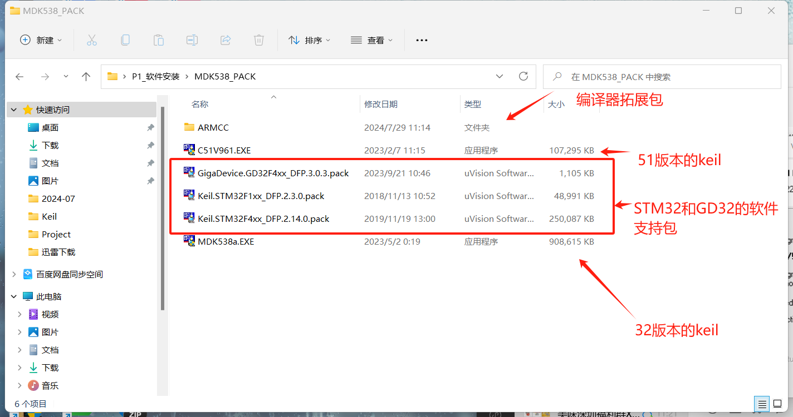</p><p data-lake-id="u64c9d2cb" id="u64c9d2cb"><span data-lake-id="u26525f2c" id="u26525f2c">双击MDK538a.EXE</span></p><p data-lake-id="u5ae50bca" id="u5ae50bca"><span data-lake-id="u2b561856" id="u2b561856">点击Next</span></p><p data-lake-id="u6b0f545d" id="u6b0f545d">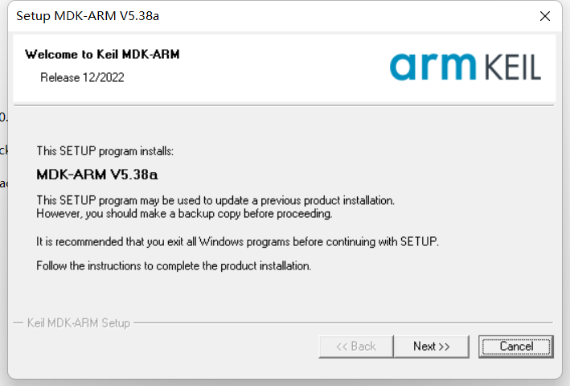</p><p data-lake-id="u15398896" id="u15398896"><span data-lake-id="uf344abcd" id="uf344abcd">选择安装路径后点击Next</span></p><p data-lake-id="u19d7fa93" id="u19d7fa93">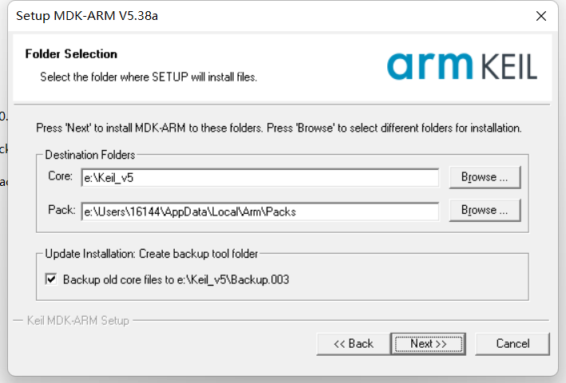</p><p data-lake-id="uedb4a5d6" id="uedb4a5d6"><span data-lake-id="uc799f022" id="uc799f022">这里可以随便输入</span></p><p data-lake-id="uaa16c4c9" id="uaa16c4c9">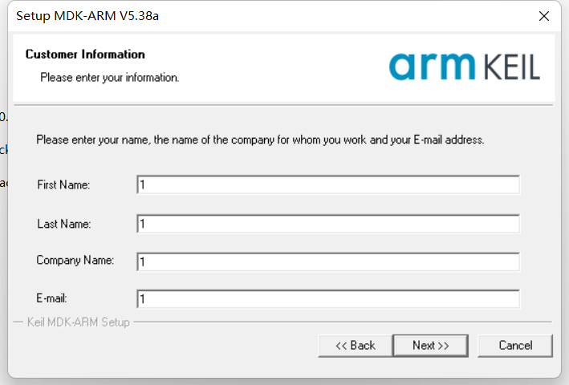</p><p data-lake-id="u92088eb8" id="u92088eb8"><span data-lake-id="u2a30ab76" id="u2a30ab76">等待安装完成</span></p><p data-lake-id="ud9a33bee" id="ud9a33bee">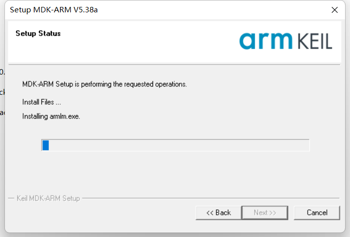</p><p data-lake-id="u54f883ba" id="u54f883ba"><strong><span class="lake-fontsize-18" data-lake-id="uc701e26d" id="uc701e26d">安装芯片支持包</span></strong></p><p data-lake-id="u9aef054e" id="u9aef054e"><strong><span class="lake-fontsize-14" data-lake-id="u6ab5647e" id="u6ab5647e">在线安装（不推荐）</span></strong></p><p data-lake-id="u02448b85" id="u02448b85"><span data-lake-id="u439c895b" id="u439c895b">首次打开软件会提示安装芯片软件支持包，可以直接搜索自己的芯片型号并且下载支持包</span></p><p data-lake-id="u78421d69" id="u78421d69">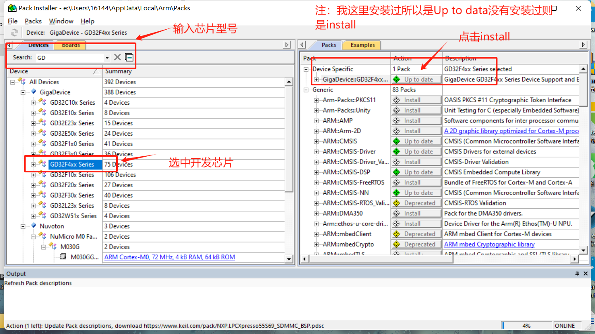</p><p data-lake-id="uef11661c" id="uef11661c"><strong><span class="lake-fontsize-14" data-lake-id="uda2ac41a" id="uda2ac41a">离线安装（推荐）</span></strong></p><p data-lake-id="u70effd94" id="u70effd94"><span data-lake-id="u4cd092fb" id="u4cd092fb">在MDK538_PACK文件夹下有三个软件支持包分别是GD32F4系列、STM32F1系列、STM32F4系列（软件支持包后缀名为.pack）。</span></p><p data-lake-id="ud2e71073" id="ud2e71073">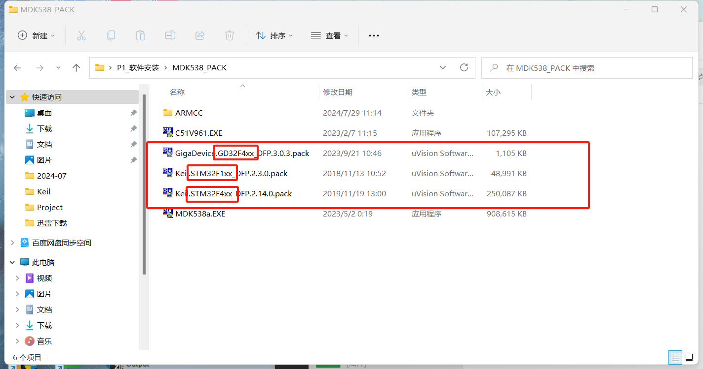</p><p data-lake-id="u19cf0280" id="u19cf0280"><span data-lake-id="u8f8f0bf6" id="u8f8f0bf6">由于天空星使用的是GD32F407所以双击GigaDevice.GD32F4xx_DFP.3.0.3.pack</span><strong><span data-lake-id="u2a542c66" id="u2a542c66">（STM32同样的操作方法）.</span></strong></p><p data-lake-id="u2045347a" id="u2045347a"><span data-lake-id="u35fb7c84" id="u35fb7c84">检查路径点击Next</span></p><p data-lake-id="u71f957aa" id="u71f957aa"><strong><span data-lake-id="u30c642aa" id="u30c642aa">注：这里支持包的路径和上一步安装keil的路径一致。</span></strong></p><p data-lake-id="uc2d22909" id="uc2d22909">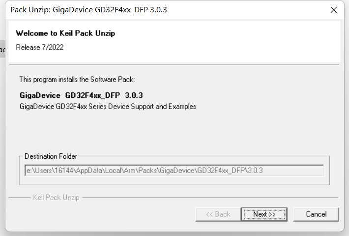</p><p data-lake-id="u4674bd48" id="u4674bd48"><span data-lake-id="u11f3b307" id="u11f3b307">安装完成</span></p><p data-lake-id="u6a69e9d3" id="u6a69e9d3">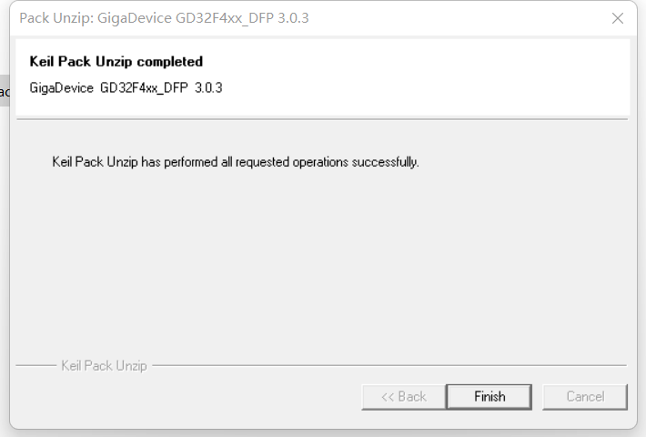</p><p data-lake-id="u6a441d10" id="u6a441d10"><strong><span class="lake-fontsize-18" data-lake-id="ucb811f31" id="ucb811f31">新建项目并且检查软件是否安装成功</span></strong></p><p data-lake-id="uf7e53f01" id="uf7e53f01"><span data-lake-id="u536a5a8a" id="u536a5a8a">创建一个新的文件夹</span></p><p data-lake-id="uce6fac4a" id="uce6fac4a"><span data-lake-id="ueb761eba" id="ueb761eba">打开keil点击上方Project</span></p><p data-lake-id="u79f9a3bf" id="u79f9a3bf">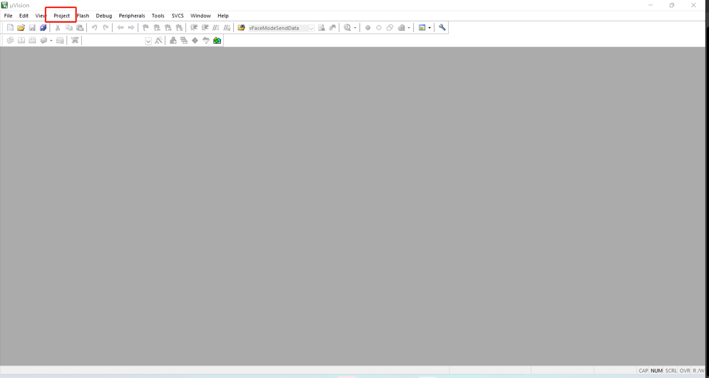</p><p data-lake-id="uea1237b5" id="uea1237b5"><span data-lake-id="u6aeac075" id="u6aeac075">新建项目</span></p><p data-lake-id="ua2064700" id="ua2064700">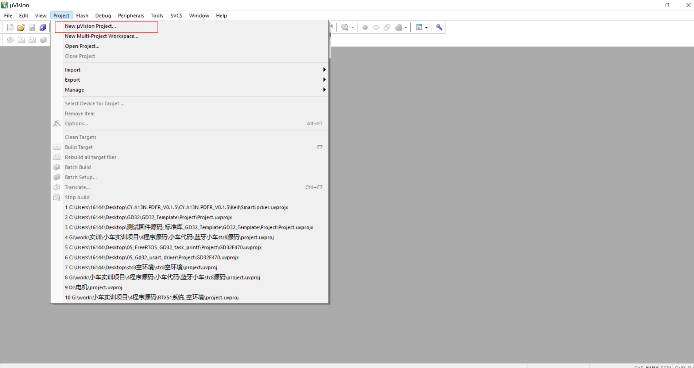</p><p data-lake-id="u5303eaa7" id="u5303eaa7"><span data-lake-id="u37560450" id="u37560450">选择我们刚刚新建的文件夹并且为项目取名之后单击保存</span></p><p data-lake-id="u6e6efe75" id="u6e6efe75">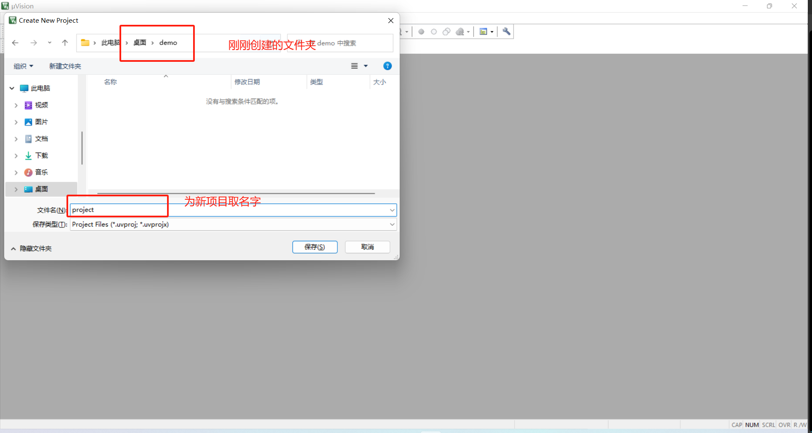</p><p data-lake-id="ufde3ad4d" id="ufde3ad4d"><span data-lake-id="ud580fde9" id="ud580fde9">选择芯片型号</span></p><p data-lake-id="ufc852de3" id="ufc852de3">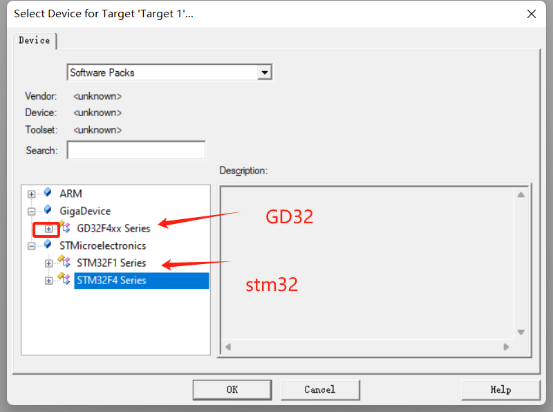</p><p data-lake-id="u97784a4d" id="u97784a4d"><span data-lake-id="ud59c76a1" id="ud59c76a1">单击芯片型号前方的</span><span data-lake-id="u624e3949" id="u624e3949">➕</span><span data-lake-id="ubacfa150" id="ubacfa150">选择GD32F470VE。</span></p><p data-lake-id="u082a9ca9" id="u082a9ca9">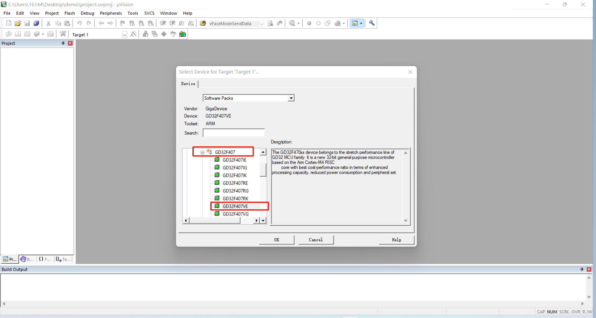</p><p data-lake-id="ufe06bc95" id="ufe06bc95"><strong><span class="lake-fontsize-14" data-lake-id="ueb1b639c" id="ueb1b639c" style="color: #DF2A3F">如果存在GD32F470VE芯片型号则表示环境安装成功</span></strong></p><p data-lake-id="u6acd8d55" id="u6acd8d55"><strong><span class="lake-fontsize-18" data-lake-id="u32dd7cc1" id="u32dd7cc1">拓展知识</span></strong></p><p data-lake-id="uee4fd26c" id="uee4fd26c"><strong><span class="lake-fontsize-18" data-lake-id="u76cada66" id="u76cada66">keil添加arm compiler5</span></strong></p><p data-lake-id="u176d3f98" id="u176d3f98"><span data-lake-id="u30dfccb8" id="u30dfccb8">将ARMCC文件夹放到keil安装目录下的ARM目录下</span></p><p data-lake-id="ud7a44618" id="ud7a44618">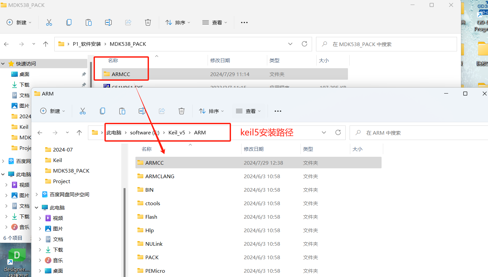</p><p data-lake-id="uafa20306" id="uafa20306"><span data-lake-id="u1fa43429" id="u1fa43429">打开keil添加编译器</span></p><p data-lake-id="u12e1e874" id="u12e1e874">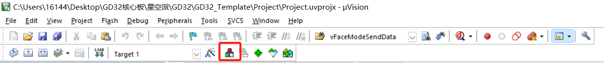</p><p data-lake-id="ucef7e264" id="ucef7e264"><span data-lake-id="u0e9e0067" id="u0e9e0067">添加编译器路径</span></p><p data-lake-id="uc715f4a4" id="uc715f4a4">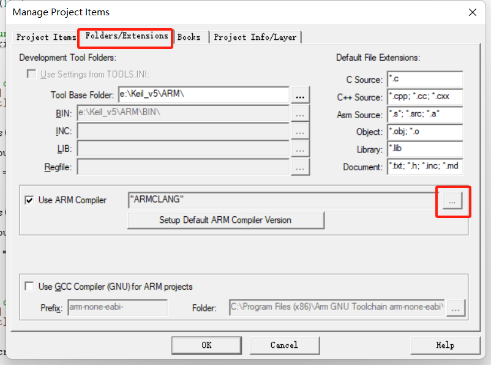</p><p data-lake-id="ua2f894e1" id="ua2f894e1"><span data-lake-id="u081c065e" id="u081c065e">点击添加</span></p><p data-lake-id="u58960b62" id="u58960b62">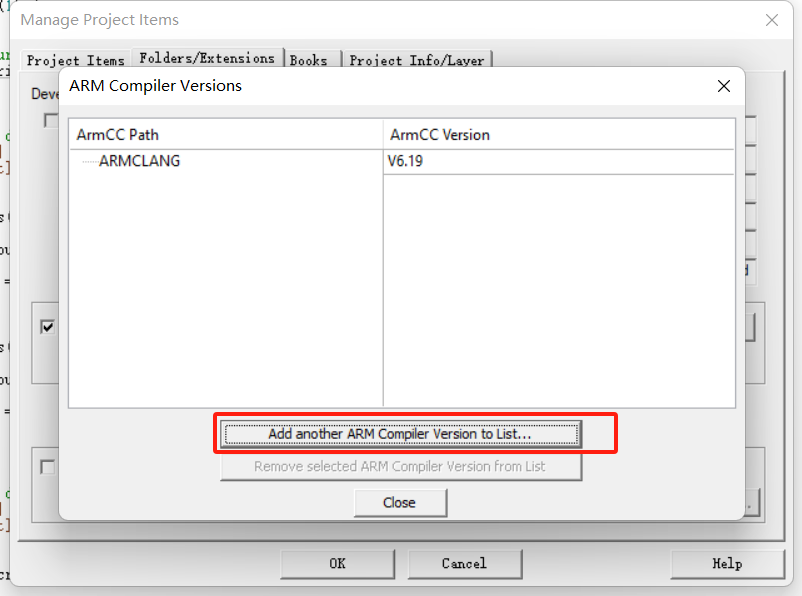</p><p data-lake-id="u1386275f" id="u1386275f"><span data-lake-id="ua29482bc" id="ua29482bc">选择keil5安装路径下的ARMCC</span></p><p data-lake-id="u77d79209" id="u77d79209">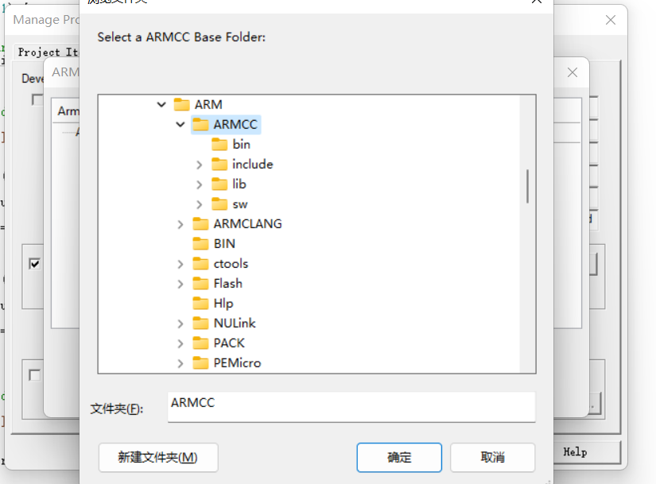</p><p data-lake-id="ube4d4d1e" id="ube4d4d1e"><span data-lake-id="ua2e6793f" id="ua2e6793f">添加成功</span></p><p data-lake-id="u58bd6407" id="u58bd6407">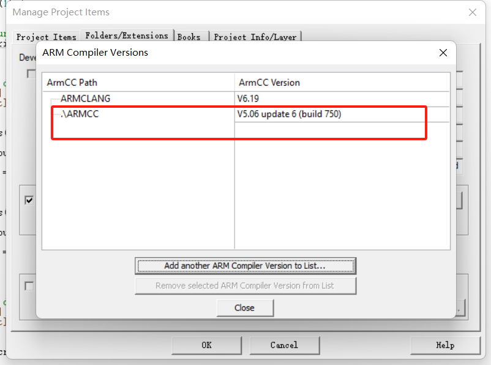</p><p data-lake-id="u83f05e3e" id="u83f05e3e"><span data-lake-id="u1975e5de" id="u1975e5de">安装完重启可以切换compiler5</span></p><p data-lake-id="u1aa1966a" id="u1aa1966a">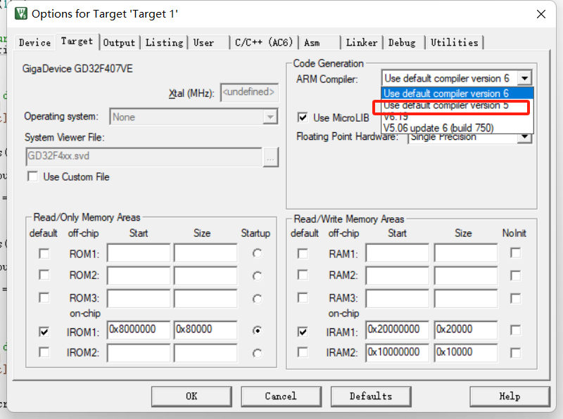</p>